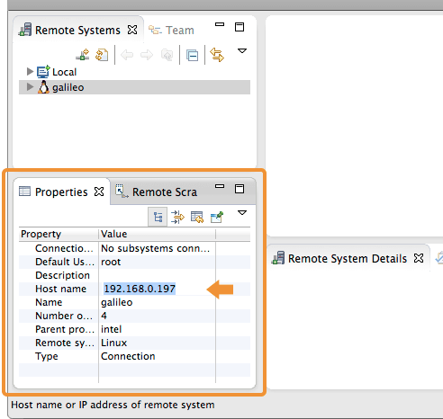

Set Up Intel® IoT Dev Kit Eclipse - Part 2: Run a Sample Project
This document will guide you through creating and running a Hello Word project (blinking the onboard LED) on either the Intel® Galileo or the Intel® Edison.
Table of contents
Select a target IoT device
To connect to your IoT board, you will need to configure Eclipse with your Intel® Edison or Intel® Galileo’s IP address. View detailed instructions »

Build and run a sample application
The version of Eclipse distributed with the developer kit has some example projects already built in. To start, build a blinking LED project from a pre-existing sample. View detailed instructions »

Look at your Intel® IoT board for a blinking light.
-
Intel® Galileo Gen 2
A green LED is located near the USB port.

-
Intel® Edison Kit for Arduino
The LED is located near the center of the board.

Congratulations, you just ran your first Intel® XDK application!
Having troubles?
Refer to the Troubleshooting - Intel XDK »
Next Steps
Experiment with sample code supplied for available sensors and actuators.